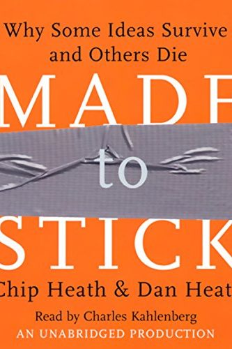

Library › Creativity
Made to Stick — Summary & Key Lessons

Why some ideas survive and others die — the SUCCESs formula behind every message people can't forget.
📖 OPEN THE FULL INTERACTIVE BREAKDOWN →🌐 Read it in Hindi, Hinglish, Gujarati, Tamil & 22 more languages — free, with audio.
💡 The Big Idea
Why do urban legends spread for decades while your important presentation is forgotten by lunch? The Heath brothers dissected hundreds of naturally sticky ideas — proverbs, legends, great ads, JFK's moon speech — and found six shared traits, the SUCCESs formula: SIMPLE (find the core, compact like a proverb), UNEXPECTED (break a pattern to get attention, open a curiosity gap to keep it), CONCRETE (sensory, specific — 'bathtub full of ice' beats 'organ theft statistics'), CREDIBLE (testable credentials, vivid details, human-scale statistics), EMOTIONAL (make them feel something — one person beats a million every time), STORIES (simulation + inspiration; stories are flight simulators for the brain). The villain throughout is the CURSE OF KNOWLEDGE: once you know something, you literally cannot imagine not knowing it — so experts speak in abstractions that feel clear to them and land as fog. The formula isn't decoration; it's translation — from your expert brain to their normal one.
🧠 The 6 Key Lessons
Lesson 1: Simple: Find the Core, Then Compact It
Chapter 1: Simple
Simple doesn't mean dumbed down — it means finding the single most important thing (the CORE) and expressing it compactly. The discipline is forced prioritization: if you say three things, you say nothing; a message that contains everything communicates nothing. The military's version is Commander's Intent — one sentence ('the plan is worthless, but if everything goes wrong, achieve THIS') that lets a thousand soldiers improvise correctly when the plan dies on contact. The compacting tools: proverbs (a lifetime of wisdom in a sentence — 'a bird in the hand...'), analogies that borrow existing knowledge ('it's Uber for X' teaches a business model in three words), and generative metaphors that keep answering new questions (Disney calling employees 'cast members' answers a thousand small decisions: costumes not uniforms, audience not customers, always in character).
📖 Example: Southwest Airlines' core: 'THE low-fare airline.' Herb Kelleher's demonstration: someone suggests adding a chicken Caesar salad on the Houston-Vegas route — does the salad make us THE low-fare airline? No salad. One sentence lets every employee at every… Read the full example →
⚡ Do this: Take the thing you most need to communicate (pitch, product, class, parenting rule) and write its Commander's Intent: ONE sentence such that if people remember nothing else, they'd still act right. Test it on the salad question — can someone use it to make a decision without you in the room?
Lesson 2: Unexpected: Break a Pattern, Open a Gap
Chapter 2: Unexpected
Attention is grabbed by surprise and HELD by curiosity — two different jobs. To surprise: find your core message's most counterintuitive implication and lead with it ('the Great Wall is NOT visible from space'; 'you could save a life today for the cost of a coffee'). But cheap surprise without connection to the core is a gimmick that damages trust (the growling-wolf ad everyone remembers — selling nobody remembers what). To hold attention: open a CURIOSITY GAP — pose a question the audience realizes they can't answer, then make them feel the gap before you fill it. News teasers ('which common household item is poisoning your family? At 11') are pure gap engineering. The counterintuitive move for experts: before delivering your answer, spend time making people WANT it — commit to a prediction, vote on an outcome, stare at the mystery — because information is interesting in exact proportion to the question it answers.
📖 Example: Nordstrom's internal legend-telling: instead of saying 'we have great customer service' (expected, forgettable), they circulate true stories of 'Nordies' — the employee who gift-wrapped a product bought at Macy's, the one who warmed customers' cars in… Read the full example →
⚡ Do this: For your next presentation or post: write down what your audience already expects you to say — then find the one true thing in your material that breaks that expectation, and OPEN with it as a question you don't immediately answer.
Lesson 3: Concrete + Credible: Bathtubs Beat Statistics
Chapters 3-4: Concrete, Credible
Abstraction is the luxury of the expert and the curse of the audience. Concrete means graspable by the senses: 'V8 engine' not 'high performance'; 'wash your hands after touching raw chicken' not 'maintain food-safety protocols.' Concrete language sticks because memory is Velcro — the more sensory hooks, the more loops catch. Aesop didn't write 'don't resent what you can't have'; he wrote a fox and grapes, and 2,500 years later you know it. For credibility without authority: use anti-authorities (real people with scars — a smoker with cancer beats a surgeon general's chart), vivid details (jurors believed the mother more when told her toothbrush was a Darth Vader toothbrush — irrelevant detail, relevant belief), human-scale statistics (don't say '5,000 nuclear warheads' — drop BBs in a bucket one at a time until the audience flinches), and the Sinatra test: one instance so strong it proves the whole case ('if we handled security for Fort Knox, we can handle yours' — if you make it there, you make it anywhere).
📖 Example: The kidney-heist legend: a business traveler, a drink with a stranger, waking in a BATHTUB FULL OF ICE with a note — 'call 911, we've taken your kidney.' It's false, and you'll remember it forever after one hearing, because every element is concrete and… Read the full example →
⚡ Do this: Audit your most important current message for abstraction: circle every noun you can't photograph and every number bigger than daily life. Replace each with a sensory equivalent or a human-scale comparison ('that's one classroom of children, every day').
Lesson 4: Emotional + Stories: One Person, Simulated
Chapters 5-6: Emotional, Story
People act on feelings, then justify with facts. The brutal research: shown a statistics-heavy appeal about African hunger, donors gave less than half what they gave to a photo and story of ONE girl, Rokia, age 7 — and worse, showing the statistics ALONGSIDE Rokia's story DECREASED giving, because analytical thinking switches off feeling. To make people care: make it about a person, not a number; appeal to identity ('what would someone like me do?' — the campaign that cut Texas littering wasn't 'please don't litter,' it was 'Don't Mess With Texas,' recruiting tough-guy pride); and connect to what people already care about, not what you do (WIIFY — what's in it for you). Then deliver it as a STORY, because stories are mental flight simulators: the brain rehearses the situation as if living it (visualizing the process beats visualizing the outcome), and the right story types — Challenge (David/Goliath: inspires), Connection (bridges a divide), Creativity (mental breakthrough) — carry your idea inside people where arguments can't reach.
📖 Example: Jared the Subway guy: a college student who lost 245 pounds eating Subway sandwiches. As a corporate message it would be a lawyer-approved nothing ('Subway offers seven subs under 6 grams of fat'). As a STORY — one specific person, XXL pants held up for the… Read the full example →
⚡ Do this: Find the Rokia in your data: whatever you're arguing for, locate ONE real person whose story embodies it, and lead with them — name, detail, before/after. Put the statistics in the appendix where they can't kill the feeling.
Lesson 5: The Curse of Knowledge: The Enemy of Every Communicator
Part 1: The Principle
Heath & Heath's core diagnosis: once you know something, you can't remember what it's like not to know it — and that 'curse of knowledge' makes experts terrible communicators. The executive who understands the strategy can't explain it to the team; the professor can't explain to the student; the founder can't explain to the customer. Every sticky idea — urban legends, proverbs, viral stories — beat the curse by being simple, unexpected, concrete, credible, emotional and story-driven. The lesson is not 'dumb it down' but 'translate it down': find the core, make it vivid, ground it in specifics. The test: could someone repeat your idea to a friend tonight? If not, the curse won.
📖 Example: Heath & Heath describe how a CEO's strategy document ('we will be the customer-centric provider') meant nothing to employees until it became concrete — 'answer the phone in two rings'. The curse had turned a good idea into abstraction; concreteness broke it. Read the full example →
⚡ Do this: Take your most important idea right now and explain it out loud as if to a 12-year-old, with one concrete example. If you can't, you've found the curse — rewrite it.
Lesson 6: The Story Is the Delivery Vehicle: Get People to Act, Not Just Remember
Part 5: The Stories
The SUCCESs framework's final element: stories are the delivery vehicle that turns remembered ideas into action. The researchers' analysis of the famous 'subway' health story (a professor loses weight eating Subway) shows why it worked: it was simple, unexpected, concrete, credible AND it contained a simulation — listeners mentally rehearsed the decision and were more likely to act. Sticky communicators don't just inform; they provide stories that act as flight simulators for future decisions. The practical move: when you want people to change behaviour, don't hand them statistics — hand them a story of someone like them making the change, with the mechanics visible.
📖 Example: Heath & Heath dissect how the Subway story — one man, his jeans, his diet — outperformed every public health campaign of its era, because listeners could imagine themselves following the same path. The story simulated the change; statistics only described it. Read the full example →
⚡ Do this: For your next change you want someone to make (customer, colleague, family), find or craft one story of someone like them who made it — with the concrete steps visible.
✅ 5-Step Action Plan
- Write the Commander's Intent for every important message: one sentence that survives everything.
- Open with your most counterintuitive truth, framed as a question you delay answering.
- Replace abstractions with photographable nouns and human-scale numbers.
- Lead with one person's story; exile statistics to the supporting role.
- Before sending anything important, run the SUCCESs checklist: Simple? Unexpected? Concrete? Credible? Emotional? Story?
⚠️ When This Doesn't Work
Stickiness is morally neutral — this book is the best manual ever written for making lies memorable. Theranos used every principle: concrete (one drop of blood), unexpected (a young founder), story (the dropout genius), emotion (a phoenix for patients) — and built a $9 billion story with no working product. Before you make your message stick, make sure the truth can survive the stickiness. A sticky lie is worse than a forgettable truth.
💀 The Graveyard Proves It
🩸 Elizabeth Holmes — Fake It Till You... Go to Prison. Burn: $9B valuation → 11 years prison. Read the full case study →
💬 Best Quotes from Made to Stick
- “The curse of knowledge: once we know something, we find it hard to imagine what it was like not to know it.”
- “To make our communications more effective, we need to shift our thinking from 'What information do I need to convey?' to 'What questions do I want my audience to ask?'”
- “If you say three things, you don't say anything.”
Interactive version: mark lessons as read, listen in your language, share quote cards.